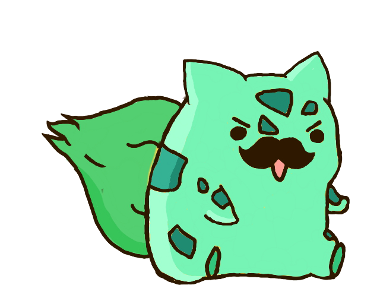
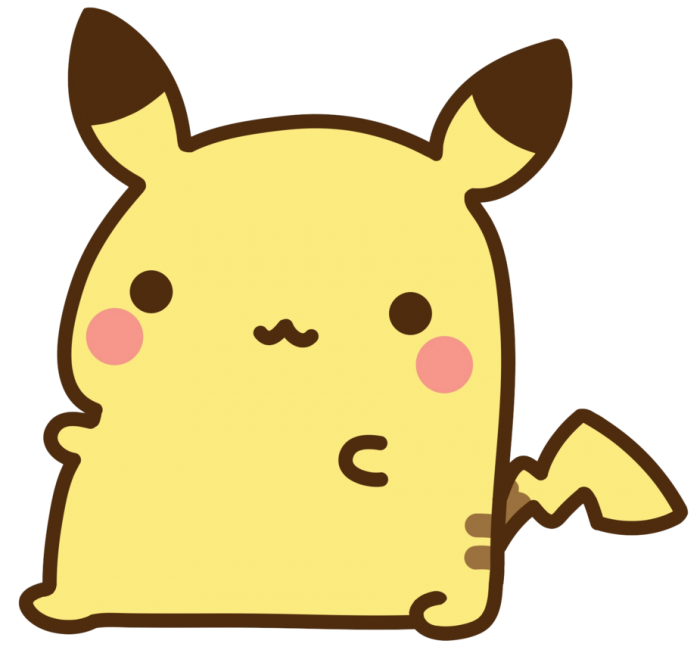
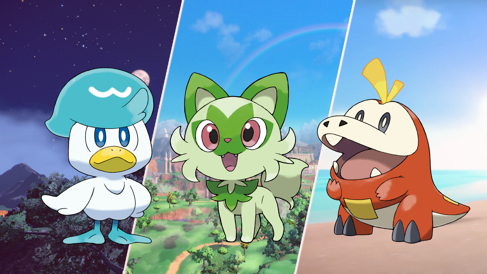

Otro mes mas de puros recuerdos
Cada paso cuenta para mí en nuestra aventura
Cuco - Si Me Voy
ZaiZai & RanRan
El principito
Donde todo comenzó. El momento en que empecé a escribir esta historia de los dos. Y fue tan mágico el inicio, te abrí mi corazón una vez más, con la película que vimos el 1ro porque para mi es tan importante como lo eres tú.
Ese mismo día te dediqué "Si me voy" de Cuco y "ONLY" de Lee Hi que también es algo demasiado importante para mi, aparecio "Do you think you could love me?" de Yung Kai, que me hizo pensar sobre el mismo nombre de la pelicula pero la verdad no lo dudo, creo que puedo amarte sin importar muchas cosas, y, por último todo eso mientras nos dábamos un besito de pulgar, fue lo que marcó totalmente ese día como especial en el mes. Te sentí demasiado cerca aunque no lo estuvieras y ese día lloré demasiado, con todo ese sentimiento decidí empezar a escribir todo para poder recordar nuestro segundo mes con muchísimas cosas que hicimos y para siempre.
Juegos y Series: Poco tiempo después, el 2do día, jugamos cositas casi todo el día; fue bastante estresante y un poquito abrumador. Yo estaba mareadísimo desde que empezamos con el juego del fantasma, eso fue muy tieso. Después de eso terminé peor mareado con el rompecabezas y el juego del computador que nunca pasamos. Luego llegó el día 3ro donde empezamos a ver la serie c-drama que es otra de las cosas que me marcó demasiado y cada vez vuelve más y más única, fuerte y real nuestra relación.
ZaiZai y RanRan son muy bellos; algunas veces ZaiZai me recuerda a ti con cosas que hace y RanRan también, eres como esa combinación de los dos. Cuando te di el primer beso fue igual: saltaste, casi me sacas un ojo, pero al final yo me fui saltando; fue como el mismo sentimiento. Estaba muy feliz ese día que me quedé como hasta las 4 de la mañana porque me fui súper tarde de tu casa.
Dibujos y El Principito: El 4to día fue también muy hermoso. Creo que es el dibujo que más copia y pega parece, son tan igualitos Milk y Mocha que parece que no fuera dibujo. Esos ositos desde que te conocí siempre me parecieron bonitos. Dibujando me libero de muchas cosas y siento que es especial dibujarte cosas y que tú lo hagas conmigo. Seguí trabajando en el libro; El Principito para mí en todos los tiempos va a ser especial y escribirlo completamente para ti es algo que me va a marcar toda esta vida. Tu regalo fue tan grande que todavía me cuesta aceptarlo; es necesario que lo vuelvas a leer y entiendas algo más de mi vida y todo lo que siento por ti.
Lee Hi - ONLY
Siento que superamos una parte importante porque fue el primer mes virtual totalmente, aun así desde el principio siempre te sentí demasiado cerca de mí. Haces cosas que me hacen sentir muy especial, por ejemplo la prueba que no quería presentarla porque estuve totalmente enfermo, y me cambiaste el día totalmente de inicio a fin. Fue muy bonito ver los dibujos, las notas y los mensajes que me mandaste. La pelicula El Cadaver De La Novia fue nuestra segunda pelicula de Tim Burton.
También siento que fue un mes donde empezamos a conocernos más aunque no parezca o no se sienta, la confianza y tranquilidad ahora son muchísimo más normales. Es como pensar que de verdad apenas estoy empezando a aceptar que eres mi novia, que vas a estar conmigo y que voy a ser quien reciba tu amor completamente. La seguridad entre nosotros siento que fue mayor y de momento siento totalmente que nada ni nadie va a hacer que eso cambie.
Young Kai - Do you think you could love me?
¡Primer mes completado! Pero nuestra relación apenas empieza. Jamás pensé en tener contigo una aplicación como la del árbol o la de cuidar una mascota, pero tu manera de querer es muy bonita. Ver que eres feliz haciéndolo me da mucha felicidad a mí también. Conocí que te gusta bailar demasiado y eso es muy bonito. Terminamos con la ultima pelicula que pusiste tu, Los enredos del amor, es una pelicula muy bonita y con esa misma pelicula entendi muchisimas cosas mas que todavia probablemente no sabia.
Cápsula del tiempo (23/02/26): Hoy guardo estas palabras como si fueran una pequeña constelación dentro del tiempo porque quiero que tú en algún mañana pudieras ver lo que escribí al inicio de mes y recuerdes cuánto brillaste en mi corazón. Ha pasado solo un mes apenas y comenzamos el segundo, sin embargo siento como si el destino hubiera estado trazando nuestras vidas juntos muchísimo tiempo atrás. Como si dos estrellas que viajaban vagamente por el mundo se chocaron coincidiendo exactamente en el mismo punto del cielo.
Mi parte favorita de estos días ha sido pensarte, escribirte, esperarte, quererte... Porque en medio de los problemas del mundo, tú eres ese lugar donde todo es paz. Una felicidad inmensa gigante que aparece en mí simplemente porque existes, porque me dejas quererte como siempre quise querer. Llevo 30 días abriendo estrellitas y aunque cada día queden menos, la emoción sigue intacta.
Mensaje de RANRAN: Sé que a veces nos cuestionamos muchas cosas en el día, pero quiero que sepas que nada cambió entre nosotros. Sé que a veces la distancia pesa, pero siempre he querido estar a tu lado. Me lo das todo. Y no solo quiero quererte más; echo de menos levantarme sabiendo que nos íbamos a ver, escuchar las canciones como las escuchábamos y salir contigo en un día cualquiera.
- Tu rata, RANRAN -
Nuestros compañeros de viaje




| D | S |
|---|---|
| "Lo ques siento no lo podria expresar ni con mi estrellitas(24/02/26)." | "Ni con mil estrellitas tampoco podria expresar lo que siento por ti, porque se que te pienso tantas veces en el dia y te quisiera decir tantas cosas que siento que no cabrian en 1000 o en 10000 estrellitas, te quiero como tantas estrellas hay en el universo y si fuera por mi volveria el doble de infinitas las estrellas infinitas que ya existen." |
| "Samuel Samuel eres mi toronja(25/02/26)." | "---" |
| "Quiero Agarrar tu carita bonitaa(26/02/26)." | "Yo tambien quiero agarrate los cachetes bonitos, me gusta hacerlo porque tienes una cara muy tierna, creo que lo hago inconscientemente, pero igualmente no lo dejaria de hacer, como abrazarte. Porque eres muy muy muy bonita y tengo que aprovechar a verte de todas las maneras." |
| "TE QUIERO(27/02/26)." | "YO TE QUIERO MAS MUCHO MAS." |
| "Tu me haces vivir tanbien gracias(28/02/26)." | "Y tu no me podrias hacer vivir mejor estando a mi lado, y eligiendome dia a dia, te quieroo y gracias tambieeen." |
| "Llorar de tanto amor es muy lindo(01/03/26)." | "LLoRaR De TaNTo aMoR eS LiNDoo, y si es muy lindo sentir algo tan fuerte como para llorar, hasta el momento no me habia pasado con otra persona que no fuera mi mamá, peroo tu me hiciste sentir tanto, en tan poco tiempo, como si nos conocieramos hace mucho tiempo, como si fueras una persona que perdi pero volvi a encontrar, llorar contigo no se sintio incomodo, llorar contigo me da esa felicidad eotica que me hace sentir muchas cosas, que e hace quererte para siempre, aun estando lejos. Me sigues dando todo y mas, eres una personita que merece todo en esta vida, por ser tu, por ser tan bonita. Danna Te PRoMeTo Que SieMPRe VoY a QueReRTe porque ya haces parte de mi, en el pasado en el presente y en el futuro, asi el destino no quiera, yo lo voy a hacer querer porque mis sentimientos no se van a desaparecer, siemrpe te voy a esperar, siemrpe te apoyare, siempre intentare estar para ti, porque contigo hasta las peleas e inseguridades son felicidad. Esa felicidad me hace llorar y que LiNDo eS LLoRaR De TaNTo aMoR." |
| "Perdoname por ser tan inmadura.(02/03/26)." | "Si esperaba encontrarme con un perdoname, pero quiero decirte algo y esque los dos somos inmaduros, a un nivel parecido, tan parecido que podria decir que somos igual de inmaduros, probablemente mi personalidad no lo haga ver tanto, pero hay muchas cosas que me guardo para mi mismo, hay muchas cosas que no digo, o cosas que no tienen sentido y me molestan. Depronto ahora contigono lo soy tanto, siempre intento ver lo mejor para ti, preocuparme por ti y no por lo que haces que me pueda molestar y creo que por eso la madurez va llegando de a poquito. Me di cuenta de muchas cosas contigo que probablemente con otras personas hubiera reaccionado mal, siempre quiero entenderte, serte sincero al maximo y querer construir para ti ese lugar seguro. No me tienes que pedir perdon por ser inmadura, yo tambien lo soy y voy aprendiendo contigo, y asi como eres te quiero muchisisisimo, porque si siempre vas a ser tu, tengo que acostumbrarme a ti para poder hacerte mas feliz y que sigamos siendp nosotros sin problemas." |
| "Vayamos de viaje a Tokyo(03/03/26)." | "-No sabia que decia-." |
| "TU ERES MI HOGAR HOME BTS(04/03/26)." | "HOME BTS, Cuando iba a tu casa siempre la escuchaba, me encanta la vibra de llegar a la ciudad despues de estar en el pueblo donde todo es mas tranquilo, pero tambien estaba la felicidad de ir a verte, Decir que soy como para mi tu eres mi hogar, porque eres ese lugar seguro, pacifico y lleno de amor donde siempre quiero estar. Y para mi HOME es la cancion perfecta para identificar ese amor grandisimo que te tengo y que siempre voy a volver a ti, en medio del caos del mundo." |
| "ABRAZAME FUERTE(05/03/26)." | "Te voy a abrazar muy muy fuerte, un super abrazooo." |
| "Te falla pero asi es más bonito(06/03/26)" | "---" |
| "ME GUSTAS CANSON(07/03/26)." | "Me pongo a pensar en que hubiera pasado si hubiera leido esto ese dia en el que me puse a abrir las estrellas, sin querer queriendo termine diciendote las cosas yo antes de darme cuenta de eso JASJAJJAS, me siento bastante culpable pero no del todo, porque igual si no las abria no iba a saberlo y como se supone que no las debia abrir pues entonces fue mejor que te lo hubiera dicho, Ahora somos novios y me gustas muchisimo pero la diferencia esque desde ese dia tambien me gustabas muchisimo pero no te lo podia decir porque iba a ser raro, no me arrepiento de haberte dicho lo que te dije ese dia, fue muy bonitooo y hermosooo aparte de que fue nuestro primer besoo, fue como todo a la vez noniono no puedo pensar mas en eso me da mucha pena." |
| "Te quiero mucho(08/03/26)." | "Te quiero mucho más, ademas me llevo el primer te quiero de nuestra relacion ,que fue llorando." |
| "Samuel, Samuel, Samuel te quiero(09/03/26)." | "Danna, Cansona, Peliona te quiero." |
| "Rata tiesa eres mi Rata(10/03/26)." | "Soy tu rataaaa." |
| "Quiero vivir un romance bonito contigo(11/03/26)." | "Yo tambien quiero vivir un romance bonito contigo, desde ese dia, pienso en muchisimas cosas tan bonitas de peliula que quiero hacer contigo que siento que me va a tomar mucho tiempo hacerlas todas pero quiero que solo seas tu la persona con la que las voy a vivir, porque contigo todo eso se volveria como el triple de especial de lo que ya es, porque contigo siento que si vale la pena hacerlo todo y quisiera que tu tambien vivieras todoooo, vi tarde el mensaje pero quiero decirte asi sea ahora que si, si quiero lo mismo que tu, que sea un romance hermoso, que dure muchisimo y que podamos decir muchas cosas de el. Algo inolvidable que sea para siempre, te quiero mucho mi cansona, eres muy importante para mi y poco a poco te vas a dar cuenta de esooooo." |
| "Eres el Jungkook peruano de (mi) Taehyung(12/03/26)." | "😭😭😭" |
| "Your name, Samuel(13/03/26)." | "Your Name, Danna." |
| "Cacheton te quiero(14/03/26)." | "Yo te quiero mas, patona cachetona." |
| "Que lindo es estar enamorada de ti(15/03/26)." | "QUE HERMOSOOOO, este estrellita es como si fuera la primera vez que me lo dices, aunque ya llevemos un mes, me da tanta emocion que digas eso, es como que vuelvo al dia en el que me diste las estrellas y me recuerda lo feliz que me senti y que seguramente me querias decir todo esto mientras yo suponia que todavia eramos amigos, que tiesoooo pero que lindaaaa, eres muy linda eres muy especial muy hermosa, preciosa, divinaa, me encantas. Eres como todo lo que siempre quise tener, pero no en sueño o depronto si es un sueño y todavia no me despierto pero igual no me quiero despertar, me gustaria seguir soñando contigo todo el tiempo, hasta que descubran que el espacio no es infinito o que los numeros tienen fin. Mi cansona te quiero tanto tanto tanto, que algun dia de estos voy a estallar de tanto quererte, porque no me va a dar el corazon para seguir queriendote de esta manera tan aaaaaaofhoahfjroqugaodhfaghafahfouahflahfough." |
| "MI RATA FAVORITA" | "" |
| "" | "" |
| "" | "" |
| "" | "" |
| "" | "" |
| "" | "" |
| "" | "" |
| "" | "" |
| "" | "" |